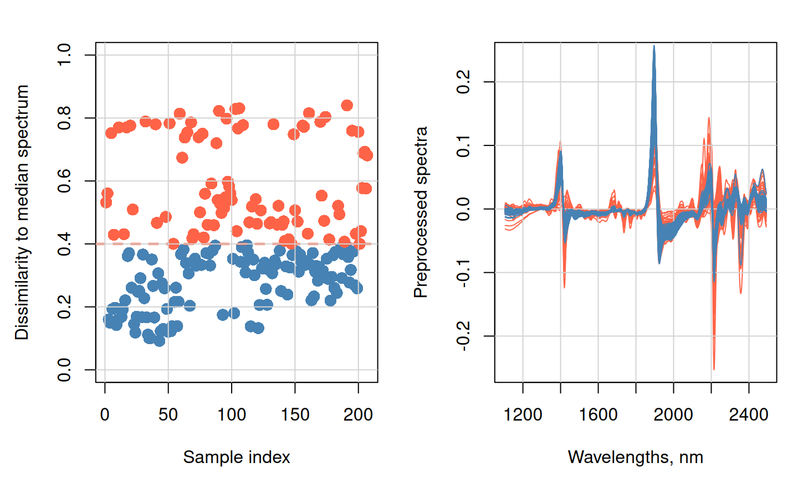
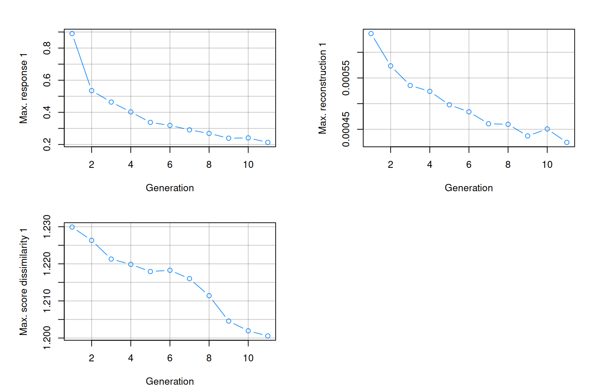
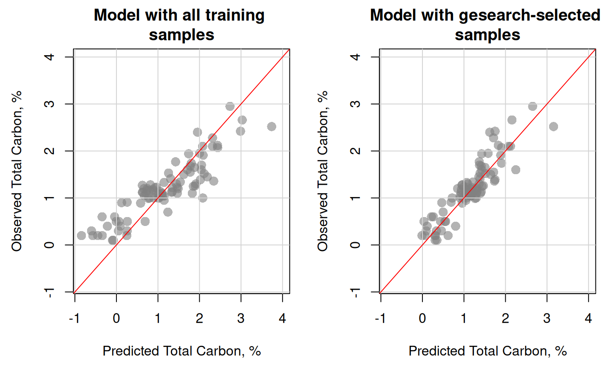

library(prospectr)
data(NIRsoil)
# Preprocess spectra
NIRsoil$spc_pr <- savitzkyGolay(
detrend(NIRsoil$spc, wav = as.numeric(colnames(NIRsoil$spc))),
m = 1, p = 1, w = 7
)
# Missing values in the response are allowed
train_x <- NIRsoil$spc_pr[NIRsoil$train == 1, ]
train_y <- NIRsoil$Ciso[NIRsoil$train == 1]
test_x <- NIRsoil$spc_pr[NIRsoil$train == 0, ]
test_y <- NIRsoil$Ciso[NIRsoil$train == 0]
md <- dissimilarity(
test_x,
apply(test_x, 2, median),
diss_method = diss_correlation(ws = 101, center = T, scale = T)
)
threshold <- 0.4Evolutionary subset search and modeling using gesearch
2026-04-21
Source:vignettes/ag-evolutionary-subset-search.qmd
Particular individuals do not recur, but their building blocks do – (Holland, 1995)

1 Introduction
Large reference datasets, such as spectral libraries, can support model development when only a limited number of target-domain samples are available. The gesearch() function implements the gesearch algorithm described in Ramirez-Lopez et al. (2026), which builds on the sample-selection idea introduced by Lobsey et al. (2017). The algorithm uses an evolutionary search to identify a subset of library samples that is most relevant to a target domain and then uses the selected subset to fit a context-specific model.
In its current implementation, gesearch() uses partial least squares (PLS) models to evaluate candidate subsets. Sample selection is guided by how well a subset predicts the target response, reconstructs the target spectra, or aligns with the target domain in latent space. The method can therefore be used for calibration transfer or domain adaptation, with or without response values from the target domain.
It is important to note that the gesearch algorithm is designed to identify a single subset of samples that is most relevant to the target domain. Accordingly, some data from the target domain must be available. In addition, an important assumption underlying gesearch is that the relationships between spectra and response values in the target domain are expected to be predominantly linear (Ramirez-Lopez et al., 2026), even though the search process itself is non-linear.
This vignette introduces the main workflow for gesearch, including how to define the search, control the selection process, inspect the selected subsets, and generate predictions from the final model. It also highlights key tuning arguments such as k, b, retain, and the control settings available through gesearch_control().
2 Glossary and conventions
As gesearch is an evolutionary search algorithm, it draws on terminology from evolutionary optimization and sample selection. This glossary summarizes the main terms used throughout the vignette.
| Term | Meaning |
|---|---|
| Target set () | The population of interest (Xu, Yu), typically small ( samples). Response values may be partially or entirely unavailable. The subscript denotes the target domain (partially “unknown”). |
| Spectral library () | A large, heterogeneous collection of candidate samples for model training (Xr, Yr), with . The subscript denotes the reference library. |
| Gene | A sample from the spectral library. |
| Gene pool | The set of genes currently eligible for selection. |
| Individual | A subset of k genes used to fit a candidate PLS model. |
| Population | The collection of all individuals in a given generation. |
| Silenced gene | A gene permanently excluded from all subsequent generations. |
| Weakness score | A measure of how poorly a gene contributes to model performance for the target set. |
| Generation | One iteration of the evolutionary cycle. |
| Incidence count | The number of individuals in which a gene appears. |
3 The gesearch algorithm: How it works
3.1 Evolutionary search overview
The algorithm treats sample selection as an evolutionary process:
Initialization: Create a population of individuals, each containing
kgenes randomly selected from the library. A gene, and therefore its corresponding sample, can appear in multiple individuals. The representation factorbcontrols how often each gene is expected to appear across the population, so that genes are represented approximately equally.Evaluation: Fit a PLS model for each individual. One or more figures of merit are then computed for that model using the available target samples. The weakness score of a gene is defined as the average performance of all individuals in which that gene is active. This procedure is repeated for all genes in the active gene pool.
Silencing: Permanently mark genes with high weakness scores as inactive, preventing them from being selected in subsequent generations. In practical terms, the corresponding samples are permanently excluded from further selection.
Reproduction: Generate new individuals through crossover (combining genes from two parents) and mutation (adding genes from the remaining pool).
Termination: Stop when the gene pool shrinks to
target_size.
The surviving genes form the final calibration subset, which is expected to deliver near-optimal performance for the target population.
3.2 Weakness score computation
The key idea behind gesearch is that gene quality is assessed indirectly: each individual (subset) receives a performance score, and a gene’s weakness is defined as the average performance across all individuals containing that gene.
3.2.1 Step 1: Evaluate each individual
For each individual in generation , a PLS model is fitted using its k active genes. This model is then evaluated on the target spectra , producing an individual-level score, for example, prediction error, reconstruction error, or distance to the target set.
3.2.2 Step 2: Aggregate to gene-level weakness
Each gene appears in multiple individuals, with its frequency controlled by the representation factor b. The weakness of gene is the mean of the individual-level scores across all individuals containing that gene:
where is the incidence count, that is, the number of individuals containing gene .
3.2.3 Interpretation
A gene that consistently appears in poorly performing individuals accumulates a high weakness score. Conversely, a gene that contributes to well-performing individuals has a low weakness score. This averaging mechanism helps isolate the marginal contribution of each gene despite the combinatorial nature of subset selection.
3.3 Weakness functions
The optimization argument controls which weakness criteria are applied. Multiple criteria can be combined, for example c("reconstruction", "similarity"). At least one criterion must be specified:
| Criterion | Individual-level score | Requires Yu? |
|---|---|---|
"reconstruction" (default) |
Error of reconstructing from the PLS latent space | No |
"similarity" (default) |
Mahalanobis distance between the target and training score centroids | No |
"response" |
RMSE of predicting | Yes |
"range" |
Penalty for predictions outside Yu_lims
|
No (bounds only) |
3.4 Gene silencing
After weakness scores are computed, genes are retained or silenced based on the retain parameter and the retention strategy specified in gesearch_control():
-
Probability-based (
retain_by = "probability", default): Genes with weakness scores below theretainquantile are kept. This approach is more robust to outliers. -
Proportion-based (
retain_by = "proportion"): A fixed proportion of genes with the lowest weakness scores is kept.
Silenced genes are permanently excluded:
3.5 Final model
Evolution terminates when the gene pool falls to target_size or when no additional genes can be silenced (stagnation). A final PLS model is then fitted using the surviving genes, with the optimal number of components selected by cross-validation independently of the fixed ncomp used during evolution.
4 Key parameters
| Parameter | Description |
|---|---|
k |
Number of active genes per individual |
b |
Gene-representation factor, that is, the target average number of individuals in which each gene appears |
retain |
Retention threshold, that is, the proportion of genes kept per generation (values > 0.9 are recommended) |
target_size |
Minimum gene pool size at which evolution terminates |
ncomp |
Number of PLS components fixed during evolution for comparability |
The population size at generation is approximately:
where is the number of active genes remaining.
5 Practical considerations
Keep
kmoderate: Smaller subsets make the contribution of each sample more distinguishable, improving the sensitivity of weakness-score estimation. However,kmust remain large enough to fit stable PLS models. Whenkbecomes too large, the effect of each sample may get diluted.Keep
bhigh: A higher representation factor ensures each gene appears in more individuals, yielding more robust weakness estimates. Values above 40 are generally recommended.Keep
retainhigh but not too high: Values above 0.9 (e.g., 0.95–0.98) ensure that only the weakest genes are silenced at each generation, reducing the risk of prematurely discarding useful samples. Lower values accelerate convergence but may degrade selection quality.Multiple weakness criteria accelerate convergence: When multiple optimisation criteria are used (e.g.,
"reconstruction","similarity","response"), more genes are silenced per generation, speeding up evolution. However, this also increases the risk of over-silencing if criteria are redundant or noisy.Set
target_sizeaccording to practical constraints: The target should reflect the expected number of relevant samples in the library and the requirements of downstream model fitting and validation. A largertarget_sizepreserves more candidates but may retain less relevant samples; a smaller value yields a more focused subset but risks excluding useful samples.
6 Example workflow
The NIRSoil dataset is also used here to illustrate how to perform an evolutionary subset search with gesearch(). The workflow includes defining the search, controlling the selection process, inspecting the selected subsets, and generating predictions from the final model.
It is important to note that the NIRSoil dataset may not be an ideal test case for gesearch(), because of two reasons: i) the target set is a subset of the library and the sample size is relatively small. ii) the test set, which could be used as the target set, appears to be dominated by non-linear relationships between spectra and response values, which may limit the performance of the search. This is mainly because the dataset originates from samples from a large geographical area, which may introduce complex interactions between soil properties and spectral features.
6.1 The dataset, the target set, and its practical constraints
To better illustrate the main workflow and key parameters of the method, the target set was extracted from the test set using a simple filtering strategy intended to reduce potential non-linearities between spectra and response values. Spectra that were substantially dissimilar to the median spectrum of the test set were removed. Although this does not guarantee the elimination of non-linear relationships, it provides a straightforward way to define a more spectrally homogeneous target set for demostration purposes.
op <- par(mfrow = c(1, 2), mar = c(4.5, 4.5, 2, 1))
plot(
seq_along(md$dissimilarity),
md$dissimilarity,
ylim = c(0, 1),
col = "steelblue",
pch = 16,
cex = 1.5,
xlab = "Sample index",
ylab = "Dissimilarity to median spectrum"
)
points(
which(md$dissimilarity >= threshold),
md$dissimilarity[md$dissimilarity >= threshold],
col = "tomato",
pch = 16,
cex = 1.5
)
abline(h = threshold, col = "tomato", lty = 2, lwd = 2)
grid(lty = 1)
matplot(
as.numeric(colnames(train_x)),
t(test_x[md$dissimilarity >= threshold, ]),
col = "tomato",
ylab = "Preprocessed spectra",
xlab = "Wavelengths, nm",
lty = 1,
type = "l"
)
grid(lty = 1)
matlines(
as.numeric(colnames(train_x)),
t(test_x[md$dissimilarity < threshold, ]),
col = "steelblue",
lty = 1,
type = "l"
)
par(op)
To construct the final target set, samples whose dissimilarity to the median spectrum falls below the correlation-dissimilarity threshold (0.4) are retained. This set is then split into two subsets: a very small subset, used to guide the search within gesearch(), and a second subset, used to validate the models built from the reference samples selected by gesearch(). The use of only a very small subset to drive the search reflects a typical practical constraint in target-domain applications, where only a limited number of samples with laboratory reference measurements are available within a short time frame. The “target” subsets are then obtained as follows:
Number of samples retained: 119
test_x_test <- test_x[keep, ]
test_y_test <- test_y[keep]
# sample a very small subset to guide the search,
# and use the rest for testing the final model
set.seed(1124)
ref_ind <- sample(sum(keep), 8)
test_x_ref <- test_x_test[ref_ind, ]
test_y_ref <- test_y_test[ref_ind]
test_x_test <- test_x_test[-ref_ind, ]
test_y_test <- test_y_test[-ref_ind]6.2 A simple linear model for predicting in the target set (baseline)
Here, the full training set is combined with the small subset of target samples to fit a simple PLS model. This serves as a baseline for comparison with the models generated by gesearch(). The optimal number of components is selected by cross-validation, and the resulting model is evaluated on the test subset of the target set.
set.seed(1124)
pls_model <- model(
Xr = rbind(
train_x[!is.na(train_y), ],
test_x_ref[!is.na(test_y_ref), ]
),
Yr = c(
train_y[!is.na(train_y)],
test_y_ref[!is.na(test_y_ref)]
),
fit_method = fit_pls(ncomp = 15, method = "simpls", scale = TRUE),
control = model_control(validation_type = "lgo", number = 10)
)Running cross-validation...Fitting model...A quick function for computing the and root mean square error () of the predictions is defined here for convenience:
reg_metrics <- function(obs, pred, na.rm = TRUE) {
if (na.rm) {
ok <- complete.cases(obs, pred)
obs <- obs[ok]
pred <- pred[ok]
}
c(RMSE = sqrt(mean((obs - pred)^2)), R2 = cor(obs, pred)^2)
}The and of the globla PLS model:
reg_metrics(test_y_test, pred) RMSE R2
0.4517339 0.7969259 6.3 The model built with the samples found by gesearch
The gesearch() function is then used to identify a subset of samples from the library that is most relevant to the target set. In the following example, the search is guided by three optimisation criteria: reconstruction error, similarity in latent space, and response prediction error. The parameters used are k = 50, meaning that each individual contains 50 active genes or samples; b = 100, meaning that each gene is expected to appear in approximately 100 individuals; and retain = 0.98, meaning that, for each weakness metric, samples with weakness scores above the 98th quantile are silenced. The search terminates when the gene pool shrinks to target_size = 80 samples. During evolution, a PLS model with a fixed number of components (ncomp = 15) is used for comparability across individuals, but the optimal number of components for the final model is selected by cross-validation independently of this fixed value.
Using the gesearch_control() additional aspects of the search can be controlled, such as the strategy for retaining genes based on their weakness scores. In this example, a probability-based retention strategy is used, where genes with weakness scores below the retain quantile are kept. This approach is more robust to outliers compared to a fixed proportion-based strategy. Here, tuning the number of factors for each individual is also disbaled for comparability across individuals, but it can be enabled by setting tune = TRUE in the control settings. The way the final models (and also the intermediate models during evolution in case tune = TRUE) is controlled by the parameters number and p, which specify the number of groups and the proportion of observations per group for leave-group-out cross-validation, respectively.
Note that tune = FALSE is recommended for most applications (and it is the default), as it enables a more direct comparison of the performance of different subsets during evolution. This is especially advisable when the search is guided by the "reconstruction" and/or "similarity" criteria. The reason is that tuning targets only the minimization of the RMSE of the response variable. As a result, models with different numbers of components may be selected during evolution. Models with too few components may reconstruct the target set poorly, which can in turn bias the weakness scores and, consequently, the selection of samples. This may also artificially increase the apparent similarity of some subsets to the target set in latent space. In additon, when tune = FALSE, the search process is considerable faster than if that is set to TRUE.
my_control <- gesearch_control(
retain_by = "probability",
tune = FALSE,
number = 10L,
p = 0.75
)
gs <- gesearch(
Xr = train_x[!is.na(train_y), ], # the spectra of the reference "set/library"
Yr = train_y[!is.na(train_y)], # the response of the reference "set/library"
Xu = test_x_ref, # the available target domain spectra
Yu = test_y_ref, # the available target domain response (accepts NAs)
k = 50, b = 100, retain = 0.95,
target_size = 120,
fit_method = fit_pls(ncomp = 20, method = "simpls", scale = TRUE),
optimization = c("reconstruction", "similarity", "response"),
control = my_control,
seed = 1124
)Figure 2 presents the evolution of the weakness scores through the generations of the search.
plot(gs)
The final model is validated in two ways. First, it is internally validated on the selected samples using leave-group-out cross-validation. Second, a model fitted only on the selected samples is applied to the target samples that drove the search and for which response values are available (Yu).
The validation results can be accessed from the final object. For the internal leave-group-out cross-validation (CV) carried out on the training set, the following summary metrics are provided: the mean RMSE across CV groups (rmse_cv), the standardised RMSE (st_rmse_cv), computed as the RMSE divided by the range of the response values (maximum minus minimum), the standard deviation of the RMSE across CV groups (rmse_sd_cv), and the mean (R^2) across CV groups (r2_cv).
# the internal leave-group out CV results for the data found
gs$validation_results[[1]]$results$train ncomp rmse_cv st_rmse_cv rmse_sd_cv r2_cv
1 1 0.6732803 0.15690406 0.13047702 0.5149457
2 2 0.5827834 0.13435450 0.15603594 0.6216447
3 3 0.5486906 0.12768145 0.12736091 0.6754240
4 4 0.5282365 0.12284612 0.14380307 0.7115680
5 5 0.5022262 0.11803719 0.10685769 0.7343631
6 6 0.4628683 0.10937944 0.08639555 0.7701428
7 7 0.4214049 0.09917873 0.07420047 0.8140365
8 8 0.4187483 0.09897791 0.06458640 0.8205662
9 9 0.3932721 0.09341847 0.07149189 0.8444321
10 10 0.3819388 0.09095276 0.04332822 0.8428385
11 11 0.3683605 0.08787330 0.04741999 0.8550745
12 12 0.3677930 0.08772105 0.05675496 0.8557638
13 13 0.3779922 0.09034698 0.06539232 0.8450057
14 14 0.3684700 0.08783899 0.06825086 0.8529858
15 15 0.3513551 0.08364698 0.06910281 0.8613599
16 16 0.3584789 0.08569288 0.07196304 0.8518921
17 17 0.3522175 0.08400874 0.07696683 0.8593407
18 18 0.3560846 0.08464847 0.07103732 0.8587512
19 19 0.3590689 0.08516864 0.06655626 0.8562541
20 20 0.3569286 0.08476165 0.05807023 0.8572429
# the CV on the target samples that drove the search (note that this is not a proper test set, as these samples were used to guide the search, but it can provide some insight into the performance of the final model on the target domain)
gs$validation_results[[1]]$results$test ncomp r2 rmse me
1 1 0.7762964 0.2626766 0.11838439
2 2 0.9080380 0.2516459 0.13116787
3 3 0.9246821 0.1896653 0.10324300
4 4 0.9635809 0.1331877 0.01036545
5 5 0.8903286 0.2138640 0.07942608
6 6 0.9108649 0.2195164 0.11948620
7 7 0.8958217 0.2247399 0.12598011
8 8 0.8184090 0.2510702 0.11254102
9 9 0.8309182 0.2250798 0.10101381
10 10 0.8888874 0.1856089 0.08846965
11 11 0.8950610 0.1628391 0.04442351
12 12 0.9208639 0.1473139 0.02593322
13 13 0.9158796 0.1430584 0.03487016
14 14 0.8693776 0.1843534 0.07842564
15 15 0.8878225 0.1802155 0.08492967
16 16 0.8963966 0.1844698 0.09497262
17 17 0.9183759 0.1741326 0.11417688
18 18 0.9583538 0.1323688 0.09552378
19 19 0.9702629 0.1338393 0.10971415
20 20 0.9786520 0.1079570 0.08540499Assume that the final model is chosen as the one with the lowest CV RMSE obtained from the samples found:
best_ncomp <- which.min(gs$validation_results[[1]]$results$train$rmse_cv)The predictions on the samples that represent the target set and that did not participate in the search process:
pred_gs <- predict(gs, test_x_test)[[1]]
reg_metrics(test_y_test, pred_gs[, best_ncomp]) RMSE R2
0.2692952 0.8120766 Figure 3 compares the observed versus predicted values for the model fitted using all available training samples and the model fitted using the subset of samples selected by gesearch().
op <- par(mfrow = c(1, 2), mar = c(4.5, 4.5, 3, 1))
rng <- range(pred, pred_gs, test_y_test, na.rm = TRUE)
plot(
pred, test_y_test,
xlim = rng,
ylim = rng,
xlab = "Predicted Total Carbon, %",
ylab = "Observed Total Carbon, %",
main = "Model with all training \nsamples",
cex = 1.5,
pch = 16,
col = rgb(0.5, 0.5, 0.5, 0.6)
)
grid(lty = 1)
abline(0, 1, col = "red")
plot(
pred_gs[, best_ncomp], test_y_test,
xlim = rng,
ylim = rng,
xlab = "Predicted Total Carbon, %",
ylab = "Observed Total Carbon, %",
main = "Model with gesearch-selected \nsamples",
cex = 1.5,
pch = 16,
col = rgb(0.5, 0.5, 0.5, 0.6)
)
grid(lty = 1)
abline(0, 1, col = "red")
par(op)
6.4 Further examples of gesearch
6.4.1 No response values available for the target set
The search process can be conducted when no information on the response variable is available for the target set:
gs_nr <- gesearch(
Xr = train_x[!is.na(train_y), ], # the spectra of the reference "set/library"
Yr = train_y[!is.na(train_y)], # the response of the reference "set/library"
Xu = test_x_ref, # the available target domain spectra
Yu = NULL, # NO available target domain response (accepts NAs)
k = 50, b = 80, retain = 0.98,
target_size = 160,
fit_method = fit_pls(ncomp = 20, method = "simpls", scale = TRUE),
optimization = c("reconstruction", "similarity"),
control = my_control,
seed = 1124
)6.4.2 No response values in the target set but with information about the response range
In some cases, the response values for the target set may not be available, but the range of possible response values may be known. This information can be used to guide the search by penalizing predictions that fall outside the specified range. The Yu_lims argument can be used for this purpose, and the "range" criterion must be included in the optimization argument. The "range" option penalizes samples that tend to generate models that predict values for the target spectra that fall outside the specified limits.
gs_nr2 <- gesearch(
Xr = train_x[!is.na(train_y), ], # the spectra of the reference "set/library"
Yr = train_y[!is.na(train_y)], # the response of the reference "set/library"
Xu = test_x_ref, # the available target domain spectra
Yu = NULL, # NO available target domain response (accepts NAs)
Yu_lims = c(0, 5), # the response range in the target domain
k = 50, b = 80, retain = 0.98,
target_size = 160,
fit_method = fit_pls(ncomp = 20, method = "simpls", scale = TRUE),
optimization = c("reconstruction", "similarity", "range"),
control = my_control,
seed = 1124
)7 Supported parallel processing
The gesearch() function supports parallel execution for evaluating individuals during the evolutionary search. To improve memory efficiency, the data are not sent in full to each worker. Instead, only the subsets of samples required for the individuals being evaluated are extracted and passed to the parallel workers. The pchunks argument controls how many individuals are processed together at each iterator step during parallel execution. Its effect on speed and memory usage depends on the size of the subsets and the available computing resources. By default, pchunks = 1L, meaning that individuals are processed one at a time. Increasing pchunks can reduce parallelisation overhead, but it may also increase memory usage because more data may need to be sent to each worker at once. The optimal value depends on the dataset and computational environment, and may require some experimentation.
Note
gesearch()supports parallel execution via theforeachanddoParallelpackages. Parallel execution is most beneficial when the number of individuals in the population is large, as each individual is evaluated independently across iterations of the evolutionary search. For small populations or short runs the overhead of spawning worker processes and serialising data between them can outweigh the computational savings, making sequential execution faster. When in doubt, benchmark both before committing to a parallel workflow.
In the example below, the doParallel package is used to register the cores for parallel execution. The doSNOW package can also be used. The example illustrates how to run gesearch() using multiple cores. The example may not be faster than sequential execution:
# Running gesearch() using multiple cores
# Execute with two cores, if available, ...
n_cores <- 2
# ... if not then go with 1 core
if (parallel::detectCores() < 2) {
n_cores <- 1
}
# Set the number of cores
library(doParallel)
clust <- makeCluster(n_cores)
registerDoParallel(clust)
# Alternatively:
# library(doSNOW)
# clust <- makeCluster(n_cores, type = "SOCK")
# registerDoSNOW(clust)
# getDoParWorkers()
my_control <- gesearch_control(
retain_by = "probability",
tune = FALSE,
number = 10L,
p = 0.75
)
gs_p <- gesearch(
Xr = train_x[!is.na(train_y), ],
Yr = train_y[!is.na(train_y)],
Xu = test_x_ref,
Yu = test_y_ref,
k = 50,
b = 100,
retain = 0.98,
target_size = 80,
fit_method = fit_pls(ncomp = 20, method = "simpls", scale = TRUE),
optimization = c("reconstruction", "similarity", "response"),
control = my_control,
seed = 1124,
pchunks = 2L
)
# Go back to sequential processing
registerDoSEQ()
try(stopCluster(clust))
gs_pParallel processing is particularly useful when the search requires fitting a large number of intermediate models per generation. However, the computational gain depends on the number of available cores, the size of the population, and the cost of fitting each individual model.
References
Lobsey, C., Viscarra-Rossel, R., Roudier, P., Hedley, C., 2017. Rs-local data-mines information from spectral libraries to improve local calibrations. European Journal of Soil Science 68, 840–852.
Ramirez-Lopez, L., Viscarra Rossel, R., Behrens, T., Orellano, C., Perez-Fernandez, E., Kooijman, L., Wadoux, A.M.J.-C., Breure, T., Summerauer, L., Safanelli, J.L., Plans, M., 2026. When spectral libraries are too complex to search: Evolutionary subset selection for domain-adaptive calibration. Analytica Chimica Acta.